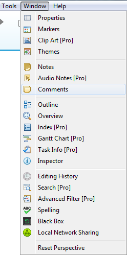

View
XMind has 19 different views to edit, display and manage your mind maps. They are Outline, Properties, Spelling, Audio Notes, Black Box, Editing History, Filter, Notes, Overview, Search in Workbook, Clip Art, Local Network Sharing, Markers, Themes, Web Browser, Taskinfo, Gantt, Comments, Inspector.
To open these views
- Choose Window on the menu.
- Select the view you need.

Notes: You can also open the view by clicking the sidebar.To move view's position
- Select the view.
- Left-click and hold the mouse to move the view. You can place the view anywhere you want, even out of the XMind.